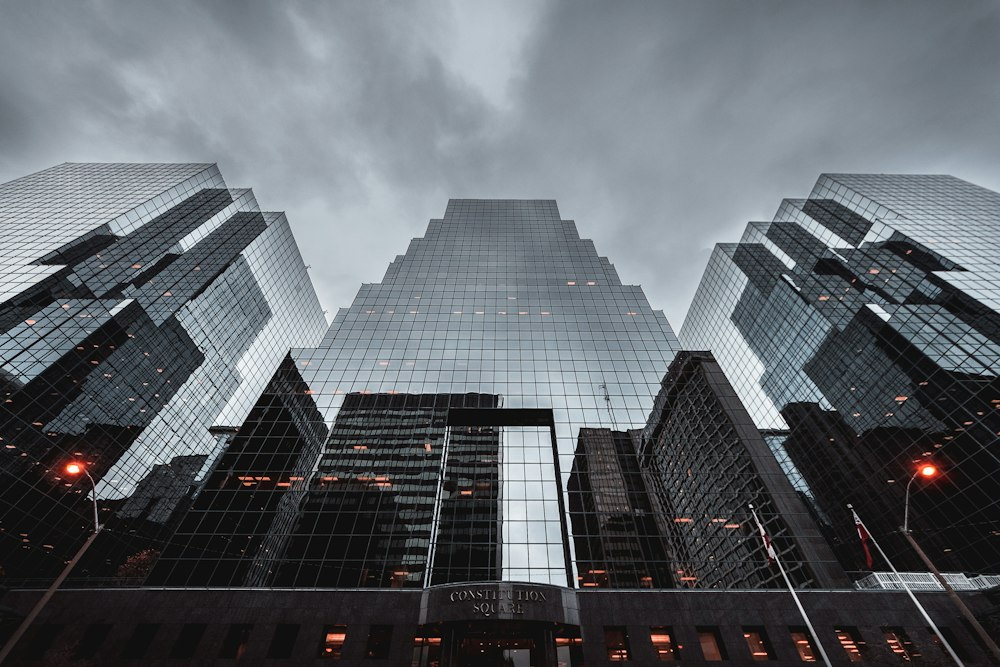
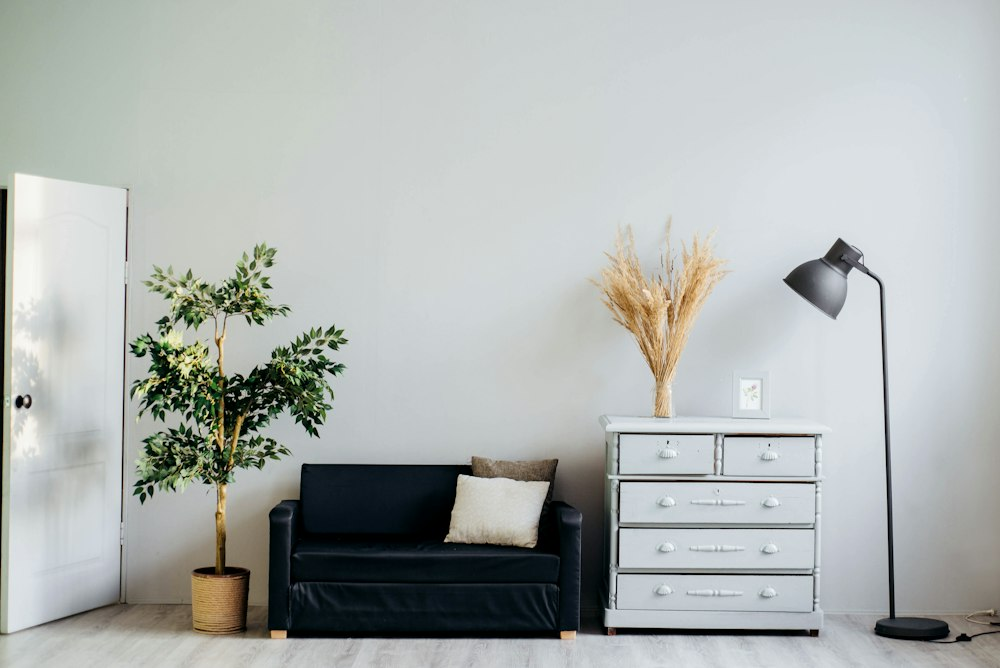

Barcha Me'moriy Loyihalar
Osmono'par binolar, san'at muzeylari, bioklimatik oranjereyalar va xalqaro moliya shtab-kvartiralari to'plami.

Nova Aurora Tower
Seysmik tebranishlarga bardoshli parametrik fasad, 64 qavat, 85,000 m² umumiy maydon.
Tafsilotlar
Sfera Zamonaviy San'at Muzeyi
Shaffof polimer gumbaz va monolit travertin toshlaridan yaratilgan fazoviy me'moriy ansambl.
Tafsilotlar
Apex Horizon Moliya Boshqarmasi
Quyosh panellari bilan to'liq qoplangan, nol uglerodli aqlli bioklimatik biznes majmuasi.
Tafsilotlar
Bio-Sfera Eko-Pavilyoni
Noyob o'simlik turlarini saqlashga mo'ljallangan iqlim nazorati avtomatlashtirilgan gumbaz.
Tafsilotlar
Qizil Terrakota Markazi
Pishirilgan gil panellar va shisha uyg'unligidagi 48 qavatli arxitektura mo'jizasi.
Tafsilotlar
NOVA San-Fransisko Shtabi
1,400 m² maydondagi ochiq me'moriy ustaxona va materiallar sinov laboratoriyasi.
Tafsilotlar